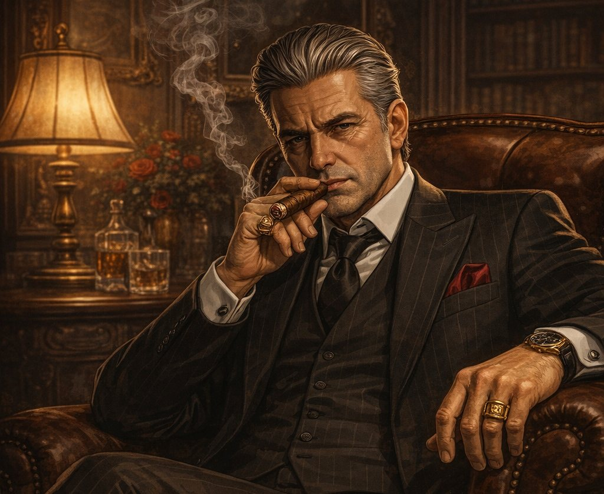

Capitolo 2: Il Violino d'Oro
Il fascino del violino d’oro trascina i personaggi più vicino al pericolo, dove seduzione e interesse si intrecciano.

Enrico si avvicinò ad Alessio e Laura e abbassò la voce. Guardò intorno per controllare che nessuno li ascoltasse.
— C’è un oggetto molto prezioso qui a Málaga — disse lentamente. — Un violino d’oro del Settecento.
Alessio lo guardò con attenzione.
— Un violino? — chiese.
Enrico annuì.
— Sì. Non è un violino normale. È fatto d’oro ed è molto antico. Appartiene a Don Salvatore, un capo della mafia siciliana.
Laura fece un passo indietro.
— Un mafioso? — disse preoccupata. — Non mi piace questa storia.
Enrico continuò, con un piccolo sorriso:
— Don Salvatore vive in una grande villa sulla collina, vicino al mare. La sua casa è molto bella, ma anche molto protetta.
Alessio incrociò le braccia.
— Protetta come? — chiese.
— Ci sono guardie, telecamere e sistemi di sicurezza — spiegò Enrico. — Non è facile entrare.
Laura scosse la testa.
— No, è troppo pericoloso. Non voglio problemi. Noi vogliamo una vita tranquilla.
Enrico fece un passo avanti.
— Capisco — disse — ma ascoltate bene. Quel violino vale venti milioni di euro.
Alessio rimase in silenzio.
Laura aprì gli occhi sorpresa.
— Venti milioni? — ripeté piano.
— Sì — continuò Enrico. — Con quei soldi potete cambiare vita. Potete andare via da qui, iniziare da zero, essere finalmente liberi.
Alessio guardò Laura. Nei suoi occhi vide paura, ma anche interesse.
— Chi è esattamente Don Salvatore? — chiese Alessio. — Perché vive a Málaga?
Enrico sospirò.
— È un uomo molto potente. La polizia italiana lo cerca da anni, ma qui è al sicuro. Ha amici importanti e molte persone lo rispettano.
— E perché ha questo violino? — domandò Laura.
— Ama la musica classica — rispose Enrico. — Il violino è il suo oggetto preferito. Lo tiene sempre vicino a sé. È il suo tesoro.
Laura abbassò lo sguardo.
— Non mi piace questa idea — disse piano. — È troppo rischioso.
Alessio si avvicinò a lei.
— Ma pensaci — disse — con quei soldi possiamo andare lontano. Possiamo cambiare identità e vivere senza paura.
Laura lo guardò negli occhi.
— E se qualcosa va male? — chiese.
Alessio non rispose subito.
Enrico li osservava in silenzio.
— Non dovete decidere adesso — disse infine. — Ma questa è un’occasione unica.
Ci fu un momento di silenzio.
Si sentiva solo il rumore del mare in lontananza.
Laura respirò profondamente.
— Dobbiamo pensarci — disse alla fine.
Alessio annuì lentamente.
Enrico sorrise.
— Bene — disse. — Vi aspetto domani al bar “La Luna”. Portate la vostra risposta.
Poi si allontanò, lasciando Alessio e Laura da soli.
Laura guardò Alessio.
— Non mi fido di lui — disse.
Alessio guardò il mare.
— Nemmeno io — rispose. — Ma forse è la nostra unica possibilità.
Laura non disse nulla.
Dentro di lei, una domanda cresceva sempre di più:
Vale la pena rischiare tutto per la libertà?